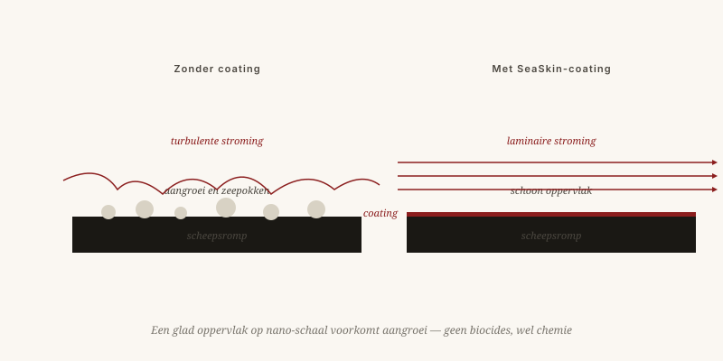

То, что уже создано
Работающие или разрабатываемые технологии, рождённые из одной концепции: работать вместе с природой, а не против неё.
Якобус ван Мерксштейн · 8 мин чтения · 23 мая 2026

Мастерская изобретателя
Покрытия, учащиеся у природы
SeaSkin и SeaSkin++
Противообрастающие покрытия для судов на основе силиконов и цвиттерионов, без биоцидов. Судно, более плавно скользящее сквозь воду, расходует на 5–15% меньше топлива — что для контейнеровоза означает сотни тонн CO₂ в год.
Статус: SeaSkin на рынке · SeaSkin++ на испытаниях с судоходными партнёрами
GuardSkin — плёнка
Биомиметическая плёнка, вдохновлённая кожей акулы. Состоит из микроскопических рёбер, стабилизирующих пограничный слой. Главное отличие: это плёнка, которую наклеивают, а не краска, которую наносят. Проще, тоньше, заменяемо.
Статус: прототипы у европейских интеграторов (DACH и Южная Европа)

От фюзеляжа самолёта до плоской крыши
Ламинарный воздушный поток в большом масштабе
Семья из пяти патентов: вихревой насос, боковое сдвиговое течение, фюзеляжный каскад, акустика и спрей-очистка. Вместе они поддерживают ламинарный поток вокруг фюзеляжа самолёта на значительно большей длине, чем это возможно сейчас.
Экономия топлива: до 10% на дальних рейсах · Патенты поданы · Переговоры с авиапроизводителями ведутся
Избирательная солнцезащита для зданий
Покрытия, избирательно отражающие солнечное тепло для снижения затрат на кондиционирование. Применённые на плоских крышах в жарких регионах, они могут снизить нагрузку на кондиционер на 30% и более. Секрет: отражать не всё излучение, а конкретно инфракрасное.
Статус: лабораторная рецептура готова · масштабирование готовится
Углерод, шины и синтез
CO₂ — обратно в землю
Инжекция биомассы в отработанные шахтные породы для долгосрочного хранения CO₂. Вместо компостирования на поверхности — закачка в глубину: в старые шахтные выработки или специально подготовленные объекты. Там углерод остаётся на века.
Пилотный проект в Испании (Алькифе) и переговоры в Сенегале
Шины, которые дышат
Шины с микровентиляцией для снижения сопротивления качению и износа. В сердечнике шины создаются микроканалы, варьирующие давление воздуха — контактное давление выравнивается, износ снижается, сопротивление качению тоже. Вдвойне актуально для электромобилей.
Патенты поданы, включая расширение CIP
Синтез без магнитной клетки
Конструкция рассмотрена в статье о термоядерном синтезе. Ранняя концептуальная стадия, ищем академических партнёров для первого эксперимента. Несколько миллионов, хорошая команда и пара лет.
Стадия: концептуальная · партнёры разыскиваются
Воздействие в числах
Биомимикрия как инженерная дисциплина
Тот, кто рассматривает эти технологии рядом, видит один возвращающийся принцип: работать вместе с природой, а не против неё. Судно, скользящее чище, самолёт, мягче проходящий сквозь воздух, здание, избирательно принимающее солнечное тепло, шина, которая дышит.
Техника буксует не на технологии
Компании, выводящие эти продукты на рынок, организованы так, чтобы быстро переводить инновации в продукт — без обычных десятилетий между идеей и применением. Техника часто буксует не на технологии, а на организации вокруг неё.
Что уже есть
Работающие и разрабатываемые технологии, все основанные на одном принципе: работать с природой, а не против неё.
SeaSkin и SeaSkin++ — противообрастающие покрытия для судов на основе силиконов и цвиттерионов, без биоцидов. Судно, скользящее чище по воде, потребляет на 5–15 процентов меньше топлива — это сотни тонн CO₂ меньше в год на контейнеровоз. GuardSkin — биомиметическая плёнка, вдохновлённая кожей акулы, построенная из микроскопических рёбер, стабилизирующих пограничный слой: наклеивается, а не наносится кистью — тоньше и легко заменяется.
AeroSkin — семейство из пяти патентов, поддерживающих ламинарный поток воздуха вокруг фюзеляжа воздушного судна на более длинном участке, чем это возможно сегодня: до 10 процентов экономии топлива на дальних рейсах. SolarSkin избирательно отражает солнечное тепло на плоских крышах — прицельно инфракрасный диапазон, — снижая нагрузку на кондиционирование на 30 процентов и более. TerraClean закачивает биомассу в старые горные выработки для долгосрочного улавливания углерода. Патенты на шины с микровентиляцией снижают сопротивление качению и износ. Конический вихревой реактор ищет академических партнёров для первого эксперимента.
Биомиметика как инженерная дисциплина
Все эти технологии объединяет один принцип: судно, скользящее чище; самолёт, мягче проходящий через воздух; здание, управляющее солнечным теплом; шина, которая дышит. Технологии чаще спотыкаются не о саму технологию, а об организацию вокруг неё. Путь от идеи до продукта по-прежнему занимает слишком много времени.